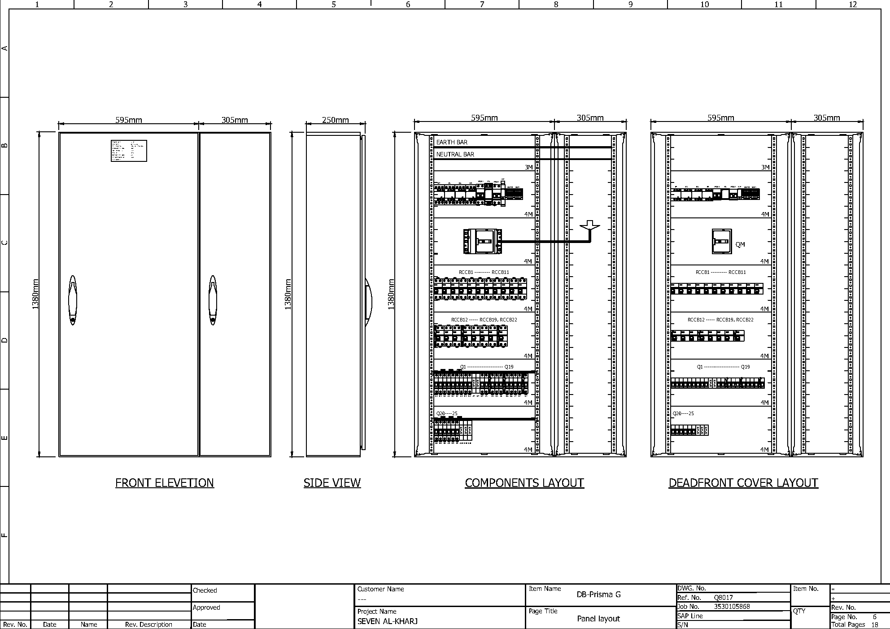

Enc. PrismaSet G
This project involved the design of a low-voltage Distribution Panel for the Seven Al-Kharj project. The panel was designed for a 400/230 V, 3-phase, 4-wire system with a 36 kA short-circuit rating and a 700 A main busbar. The PCC was developed in a PrismaSeT International enclosure with Form 3B segregation and IP54 protection.
The design included an LSIG-protected incoming MCCB, multiple outgoing feeder breakers, earth-leakage protection, surge protection, and power metering. The panel was designed in accordance with IEC 61439-1 and IEC 61439-2, with dedicated busbar and cable compartments to support safe and organized internal arrangement.
